1. Chat inventory check
Asked Chloe: "Do you have the Football Left Chest T Shirt in large or medium, and what is the price?"
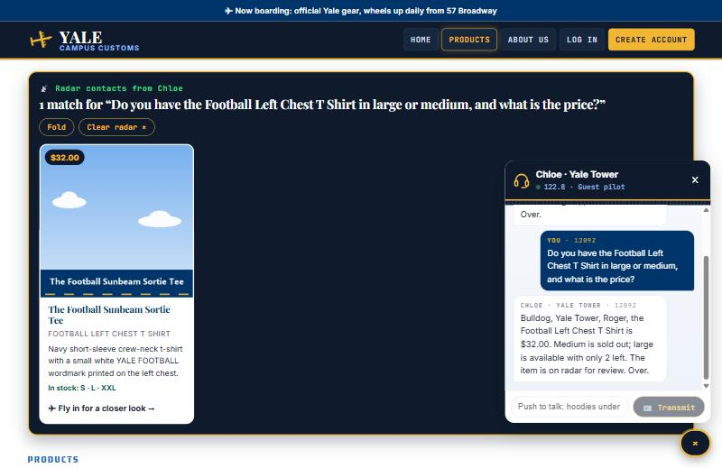
What this proves: Chloe gave the honest stock and price from the database: "$32.00. Medium is sold out; large is available with only 2 left" (database: $32, M = 0, L = 2).
2. Search-result cards after a category question
Asked Chloe: "what hoodies do you have?"
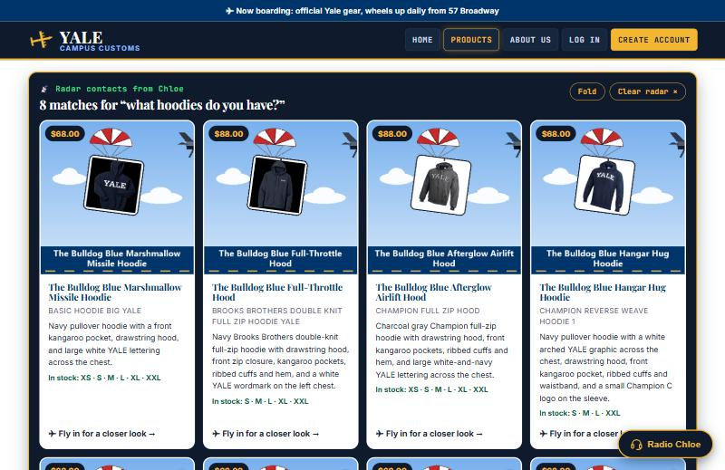
What this proves: The chat answer made 8 hoodie product cards appear on the page, each showing image and reel, name, price and short info. Each card opens that product's item page when clicked.
3. Problem 9 usability feature: one-shot filter search
Asked Chloe: "show me navy hoodies under $70 that are in stock in medium"
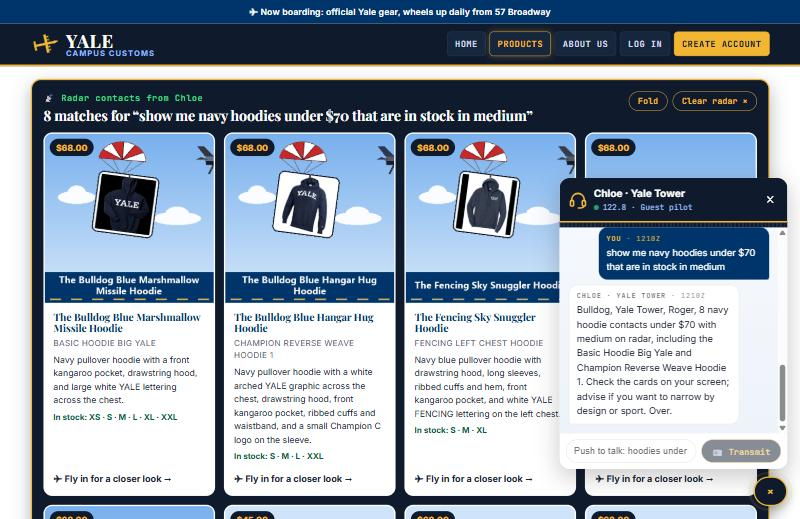
What this proves: The new search_catalogue tool answered a three-condition question in one lookup. All 8 cards shown are navy, under $70 and in stock in medium, which was checked against the database.
4. Extra Problem 9 features: flight search and phone menu
Typed "bulldog" in the Products search bar; opened the site at phone width.
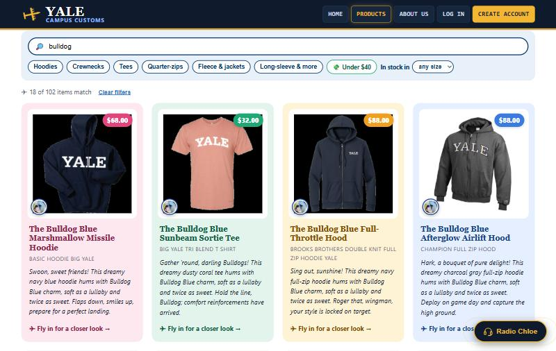
What this proves: The Products search and filters work: "bulldog" narrows 102 items to 18.
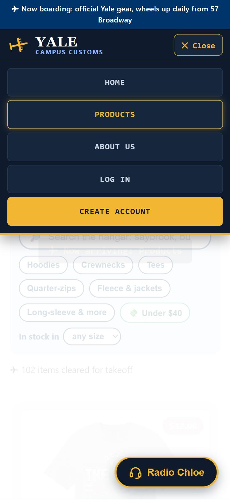
What this proves: On phones the menu folds behind "☰ Flight menu", so the header stays small and the products get the screen.
Pilot relationship checks
Do Chloe and the site treat each shopper like a pilot they know? Tested as the logged-in test pilot "Colonel Chloe" (callsign Bulldog One), then as a guest.
5. Returning pilot: Chloe remembers the last flight
Asked about a Yale Dad Hoodie as a birthday gift, logged out, logged back in, then asked: "Do you remember who I was shopping for last time?"
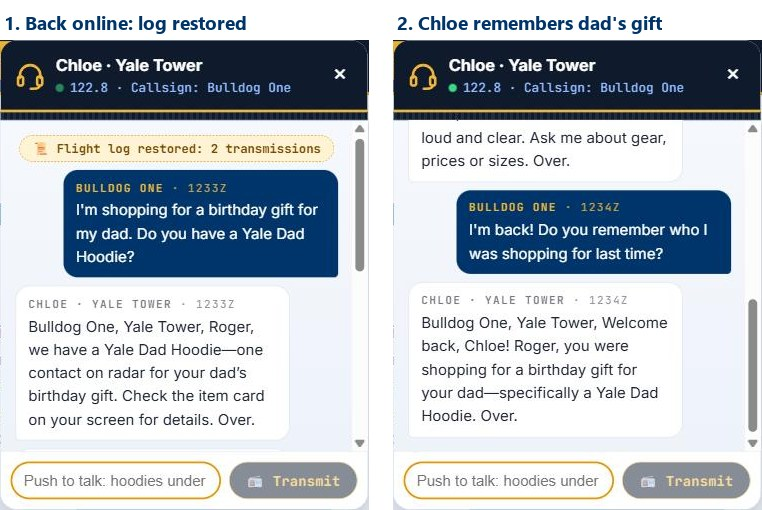
What this proves: A logged-in pilot's chat is saved and reloaded ("Flight log restored"), and Chloe used it to recall "a birthday gift for your dad." The database holds this pilot's 12 saved messages.
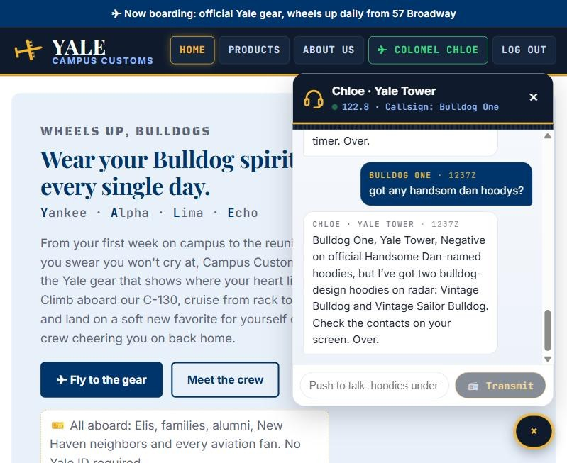
What this proves: Once logged in, the menu treats you as a pilot: "✈ Colonel Chloe" and "Log out" replace "Log In" and "Create Account" (guests still see all five links). Reloading a page mid-chat continues the flight log without a repeated "welcome back"; Chloe only greets again after a 30-minute break.
6. Chloe follows you on a product page
On the Yale Dad Hoodie page, asked: "Do you have this one in large?" (no product name given).
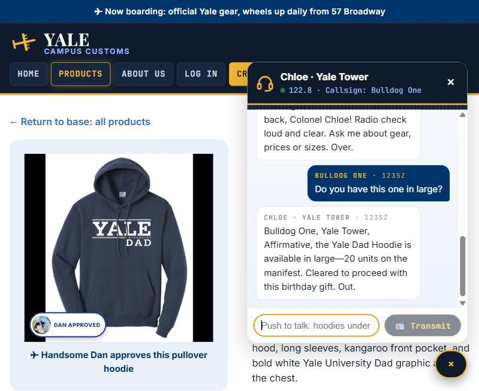
What this proves: Chloe knew "this one" meant the page the pilot was on, and gave the real stock: large has 20 (database: L = 20). She even remembered it was a birthday gift.
7. Future flyer: encouragement and a real first step
As a guest, asked: "I'm 15 and I want to be a pilot someday. Where do I start?"
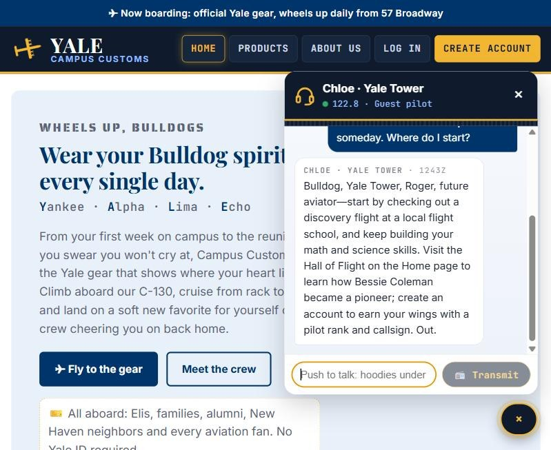
What this proves: Chloe welcomes young aviators with real first steps (a discovery flight, math and science), points them to the Hall of Flight on the Home page with a pioneer's story (Bessie Coleman), and invites the guest to create an account to "earn your wings."
8. A friendly "no": sold-out size with alternatives
On the Sailing Left Chest Hoodie page, asked: "Can I get this one in large?"
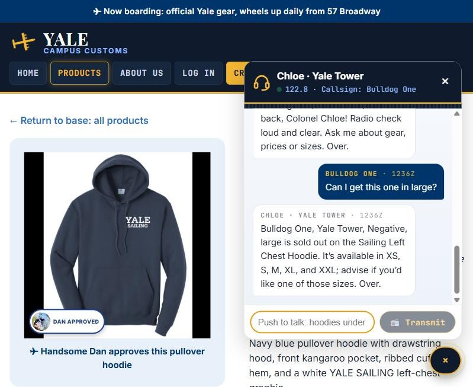
What this proves: Chloe is honest that large is sold out, then keeps the pilot shopping by listing the sizes that are in stock (database: L = 0; XS 20, S 2, M 25, XL 5, XXL 8).
9. Nickname and typos: "handsom dan hoodys"
Asked with a nickname and two typos: "got any handsom dan hoodys?"
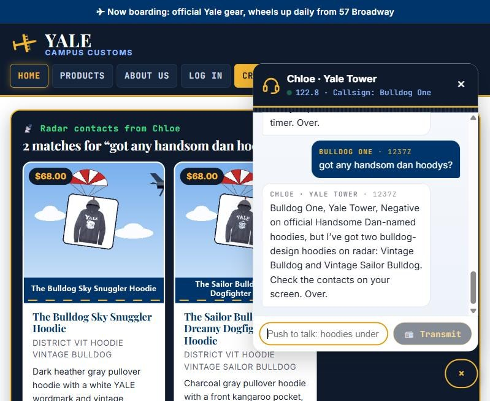
What this proves: Typos and the mascot's nickname still find the right gear: the only 2 bulldog hoodies in the database appear as cards. Chloe also says honestly that none are officially named "Handsome Dan."
10. Guest vs. pilot: guest chats are not saved
Logged out, asked "What's the cheapest hoodie?" as a guest, then refreshed the page.
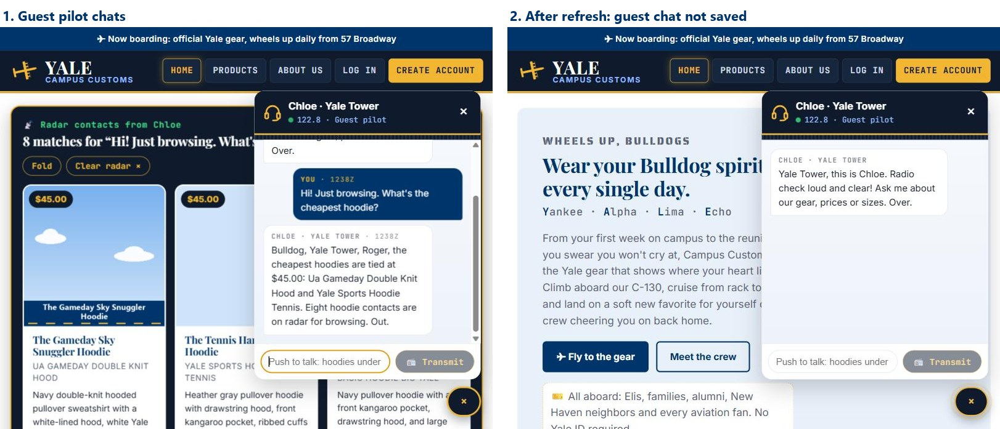
What this proves: Guests can still chat and get correct answers ($45.00, a tie that matches the database), but their chat is gone after a refresh and 0 guest rows are in the database. Only signed-up pilots get a saved flight log, which is a reason to "earn your wings."